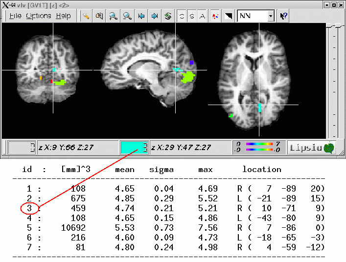

Example:
vblobsize -in tcgbsAC1T.v -pos 3.1 -neg -3.1 -out BtcgbsAC1T.v -minsize 81
-report AC1T_list.txt -system talairach
The output image 'tcgbsAC1T.v' displays all connected components. Their labels correspond
to labels in the report file 'AC1T_list.txt'.
Only activation areas of size larger than '-minsize' are considered, where
'-minsize' is given in units of mm^3. For
example, if the spatial resolution is 3x3x3mm then a minsize of 81 corresponds to
three voxels (81 = 3 x 27 = 3 x (3x3x3)).
The parameter '-system' determines the coordinate-system that will be printed in the list. Possible values are:
- mm: coordinates are given in millimeter (origin is at the top left border of the image),
- voxel: coordinates are given as voxels (origin is at the top left border of the image),
- talairach: the coordinate system corresponds to that of the Talairach/Tournoux Atlas, i.e. the x-axis passes through the upper border of CA and the lower border of CP.
The parameter '-median' can be used to separate the left and right hemispheres. If set to 'true' then in the image center a sagittal slice of one voxel thickness will be cleared.
Caution:
The use of 'vblobsize' only makes sense for registered 3D data
(otherwise, Talairach coordinates are not available).
